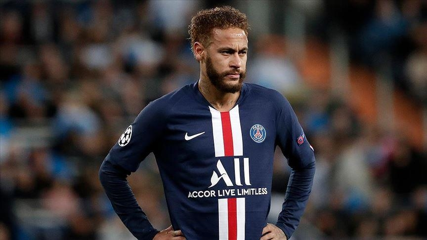

He was born in Mogi das Cruzes, São Paulo, to Neymar Santos Sr. and Nadine da Silva and had a Christian upbringing. He inherited his name from his father, who is a former footballer and became his son's advisor as Neymar's talents began to grow. Neymar comments on his father's role: "My father has been by my side since I was little. He takes care of things, my finances and my family." Growing up, Neymar combined his love of futsal with street football. Neymar said that futsal had a massive influence on him growing up, helping him develop his technique, speed of thought and ability to perform moves in tight spaces.
In 2003, Neymar moved with his family to São Vicente, where he began playing for youth side Portuguesa Santista. Then, later in 2003, they moved to Santos, where Neymar joined Santos. With the success of his youth career and added income, the family bought their first property, a house next to Vila Belmiro, Santos' home stadium. Their quality of family life improved, as at age 15, Neymar was earning 10,000 reais per month and at 16, 125,000 reais per month. At 17, he signed his first full professional contract, was upgraded to the Santos first team, and began signing his first sponsorship deals. read more
| Year | Team | Matches | Goals | Assists |
|---|---|---|---|---|
| 2022-2023 | PSG | 28 | 16 | 14 |
| 2013-2017 | Barcelona | 105 | 68 | 35 |
|  | ||||